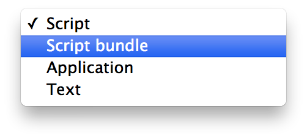
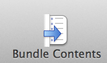
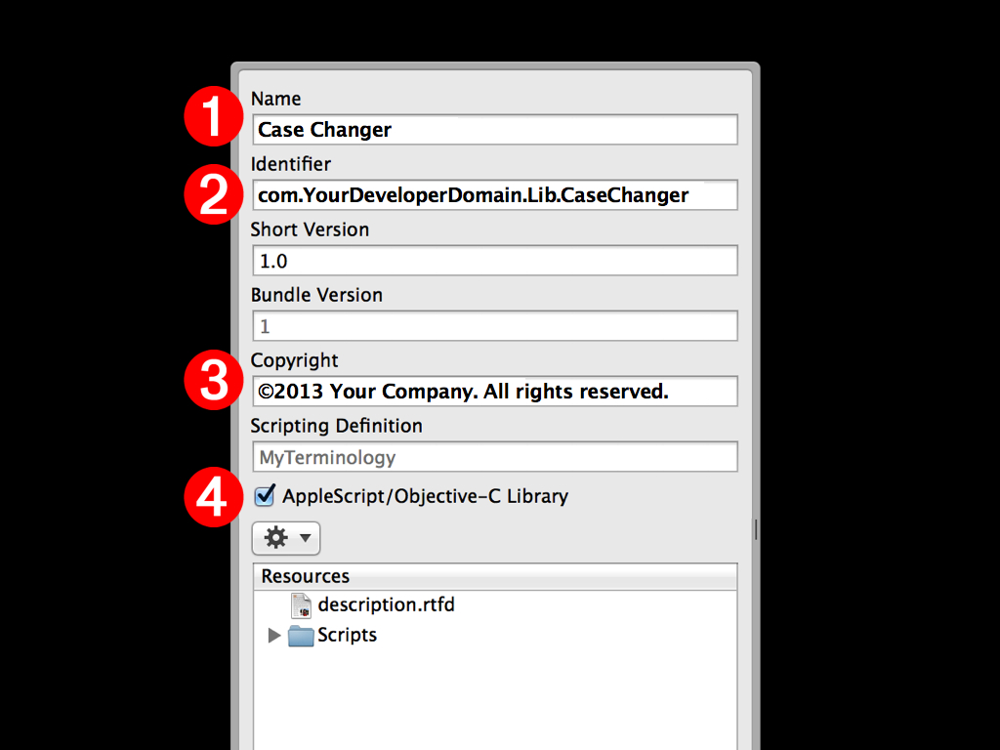

In some situations, the functions of the native AppleScript language and its standard set of scripting additions, may be lacking in the ability to perform a certain task, such as transforming the case of text.
For example, the code used in the creation of the simple AppleScript Library in the previous section, is limited in the scope of what it can do. The previous script handler:
- Only works with the English language
- Does not support the transformation of special characters
- Does not support other standard case conversions such a Word Case
Fortunately, AppleScript/Objective-C (introduced in OS X v10.6) provides access to the thousands of functions that make up OS X’s powerful Cocoa frameworks. The issues found in the previous library handler can be easily resolved by creating a library that uses AppleScript/Objective-C to access the text handling capabilities of the Cocoa NSString class.
AppleScript Libraries, written to use AppleScript/Objective-C, are saved as script bundle files. Open a new script document in the AppleScript Editor application. Save the new document as a script bundle by choosing Script bundle from the Format popup menu in the Save dialog (see below):

For this example, name the script: Case Changer. By default, the saved script bundle file will have a name extension of “scptd”.
Once the script has been saved as a bundle file, you can enter the script parameters that define it as a library. Press the Bundle Contents button (shown below), located at the top right of the script window, to open the script bundle drawer, which is attached to main script window.

The bundle drawer contains four parameters we will use to identify the script bundle as an AppleScript Library written in AppleScript/Objective-C.

(1) Script Library Name- In the Name text input field, enter the name of this script library: Case Changer
(2) Bundle Identifier - It is important that every AppleScript Library have a unique bundle identifier. In this text input field, enter a bundle identifier based on your developer domain (no spaces). If you don’t have a developer domain, use your name, like: com.JohnnyAppleseed.lib.CaseChanger
(3) Developer Copyright - In this text input field, enter a copyright string for your library.
(4) AppleScript/Objective-C Library checkbox - If an AppleScript Library contains AppleScript/Objective-C code, this checkbox must be selected in order to allow the script to be compiled. For this example, select this checkbox.
Save the script again. You are now ready to add the script code for the library.
AppleScript/Objective-C enables AppleScript scripts to call Cocoa methods of Cocoa classes to perform functions and tasks with data passed to the methods.
In the example handler below, text passed to the handler is converted from standard AppleScript text into a Cocoa string, and then depending on the passed numeric case indicator (0, 1, or 2), a Cocoa method from the NSString class is applied to the created Cocoa string to change the case of the string. The resulting string is then converted back into AppleScript text and returned to the script.
on changeCaseOfText(sourceText, caseIndicator)
-- create a Cocoa string from the passed text
set the sourceString to ¬
current application's NSString's stringWithString:sourceText
-- apply the indicated transformation to the Cocoa string
if the caseIndicator is 0 then
set the adjustedString to sourceString's uppercaseString()
else if the caseIndicator is 1 then
set the adjustedString to sourceString's lowercaseString()
else
set the adjustedString to sourceString's capitalizedString()
end if
-- convert from Cocoa string to AppleScript text
return (adjustedString as string)
end changeCaseOfText
Next, copy the text of the handler and paste it into the blank script bundle file you created. Compile the script, save, and then close the script bundle file.
AppleScript Libraries are installed and made available for use by AppleScript scripts, by placing their files within a folder titled: “Script Libraries”. A Script Libraries folder can reside in a variety of locations, depending on how you want to define their availability on the computer.
The easiest way to install an AppleScript Library for the current user is to make a new folder in your Home > Library folder, titled Script Libraries. Next, place your saved script bundle file into the newly created Script Libraries folder. That’s all you need to do!
For detailed information on other available installation locations, read the Installing and Deploying AppleScript Libraries segment on the overview page of this topic.
Once installed, the handlers contained in AppleScript Libraries can be accessed by AppleScript scripts directly via tell statements or tell blocks. Copy the script text below, paste it into a new script window, and run.
tell script "Case Changer"
set the adjustedText to changeCaseOfText("How now brown cow.", 3)
--> result: "How Now Brown Cow."
end tell
Unlike the handler from the Simple AppleScript Library, this handler works with special characters, non-English languages, and also offers the ability to convert text to Word Case. Cool!